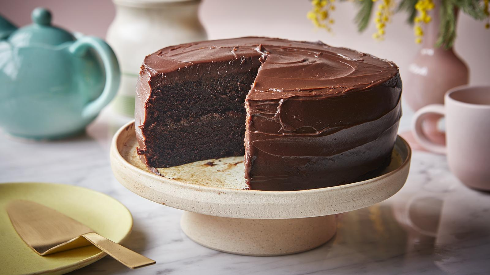

Chocolate Cake
Chocolate Cake is a timeless dessert loved by everyone. Soft, moist, and rich in flavor, this cake combines the deep taste of cocoa with the sweetness of sugar and the smoothness of butter. Perfect for birthdays, celebrations, or simply to brighten your day, this classic treat melts in your mouth and leaves you wanting another slice — pure indulgence in every bite!
Ingredients:
- 1 and 3/4 cups all-purpose flour
- 3/4 cup unsweetened cocoa powder
- 1 and 1/2 teaspoons baking powder
- 1 and 1/2 teaspoons baking soda
- 1/2 teaspoon salt
- 2 cups sugar
- 2 large eggs
- 1 cup milk
- 1/2 cup vegetable oil
- 2 teaspoons vanilla extract
- 1 cup boiling water
Steps:
- Preheat your oven to 180°C (350°F) and grease a round cake pan.
- In a large bowl, combine flour, cocoa powder, baking powder, baking soda, and salt.
- In another bowl, beat together the sugar, eggs, milk, oil, and vanilla extract until smooth.
- Gradually add the dry ingredients to the wet mixture and stir until well combined.
- Carefully mix in the boiling water — the batter will be thin, but that’s normal.
- Pour the batter into the prepared cake pan and bake for 30–35 minutes, or until a toothpick inserted in the center comes out clean.
- Let the cake cool for about 10 minutes before removing it from the pan.
- Allow to cool completely before serving or frosting. Enjoy your rich and moist chocolate cake!
